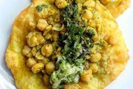

Doubles

There’s nothing like standing at the side of the road and using your hands to inhale the soggy mess of savory
deliciousness known as the Trinidad Doubles. One of the most famous Trinidad street foods, Doubles, is commonly
associated with breakfast or late-night bar crawls. Made with cooked chana (also known as chickpeas) placed on
top of two bara (two fried flatbread) and finished with various local condiments depending on what side of the
road you find yourself. Cucumber chutney, Tamarind chutney, Chadon Beni Sauce, and pepper sauce are some of the
condiments used to add depth of flavor and heat to this dish. This fun, hands-on dish will make your next social
gathering flavorful and interactive
Ingredients:
- 1/3 cup warm water
- 1 teaspoon active dry yeast
- 1/4 teaspoon sugar
- 2 cups all purpose flour
- 1 teaspoon ground cumin
- 1 teaspoon curry powder
- 1/2 teaspoon kosher salt
- 1/2 teaspoon freshly ground black pepper
Recipe:
- In a small bowl, mix the water, yeast, and sugar. Set aside for about 5 minutes, until foamy.
- Meanwhile, in a large bowl, combine the flour, cumin, curry powder, salt, and pepper.
- Add the yeast mixture to the flour mixture. Stir to combine, adding more water if needed to form a slightly
firm dough. Cover with a damp cloth and let rise in a warm place rise for 60 to 90 minutes, until doubled in
volume.
- In a large skillet over medium heat, warm 1 tablespoon of the oil until it shimmers. Cook the onion, garlic,
and curry powder, stirring, for about 5 minutes, until softened and fragrant.
- Add the chickpeas and stir to coat with the spice mixture. Cook, stirring occasionally, for about 5 minutes,
until well combined and heated through.
- Add the cumin, salt, pepper, and 1 cup of water and stir to combine. Reduce the heat to medium-low, cover,
and simmer for about 30 minutes, until the chickpeas are very soft. There should still be sauce; if not,
reconstitute with water to form a medium-thick sauce. Add the pepper sauce and stir to combine; set aside
until ready to assemble.
- After the dough has risen, punch down and let rest for 10 minutes. Dampen your hands with water or oil. Pull
off tablespoon-sized pieces of dough and roll into 4½-inch rounds; arrange on a baking sheet. Repeat until
you have used up all the dough and have an even number of rounds.
- In a large deep pan over medium-high heat, warm the remaining 1 cup of oil (it should be about 3 inches
deep). Fry the baras for 15 to 30 seconds on each side, until puffed and golden. Drain on paper towels or a
wire rack.
- Place 1 bara on a plate. Spoon 1 tablespoon of the chickpea filling on top. Top with additional condiments
as desired (see my notes above).
Back to top
Back to main page